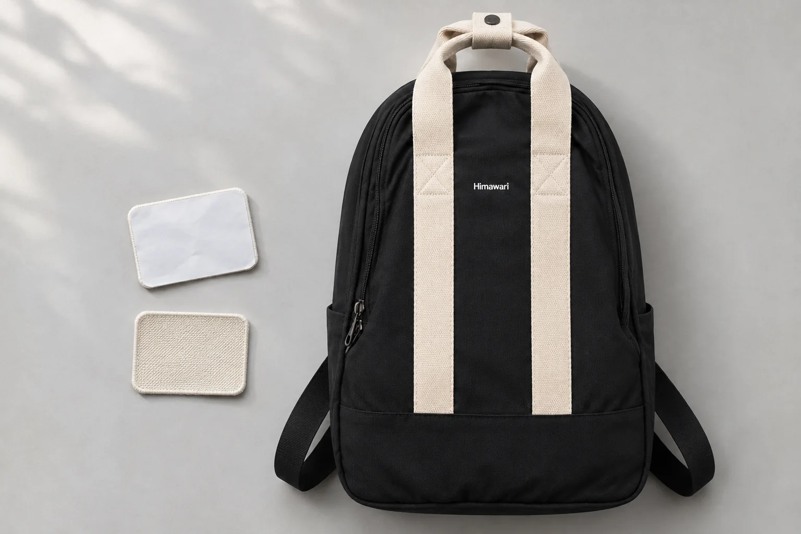
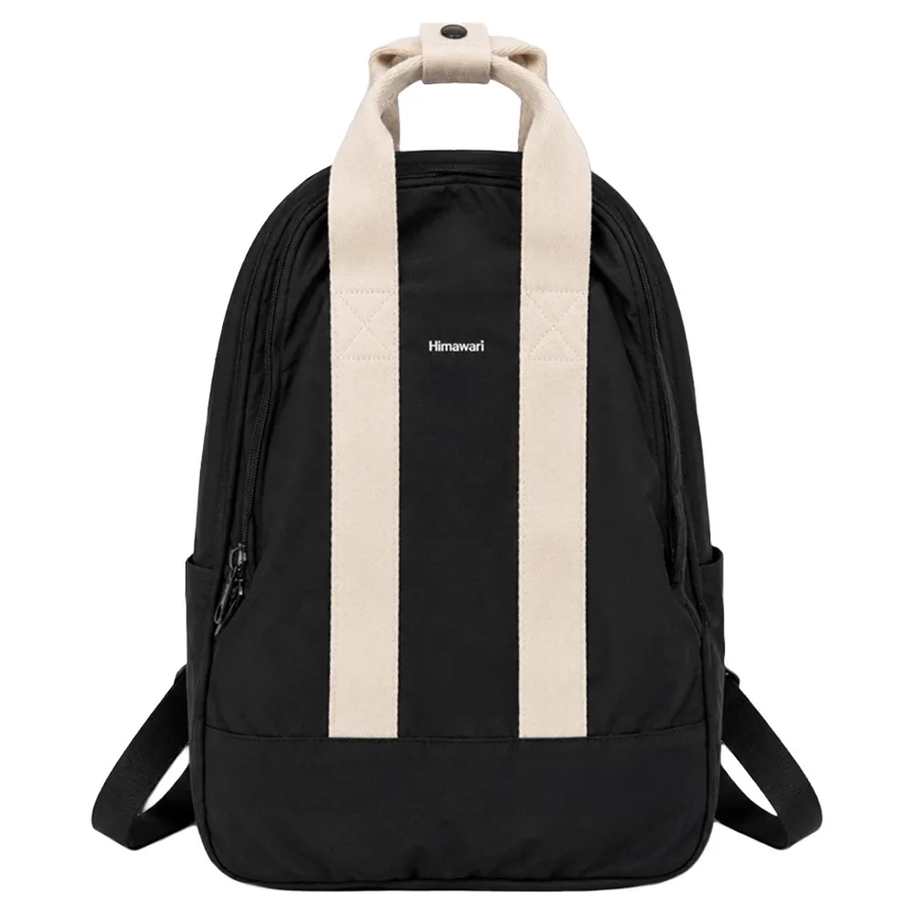

백팩에 붙일 패치, 뒷면부터 골라야 하는 이유
검정 백팩에 작은 자수 패치를 더하고 싶습니다. 그림과 색을 고른 다음 어느 자리에 붙일지 생각하지만, 그 전에 뒤집어 볼 부분이 있습니다. 패치의 뒷면입니다. 실로 달도록 만든 것인지, 접착층이 있는 것인지, 별도의 짝과 맞물리는 방식인지에 따라 가방에 필요한 작업이 달라집니다. 앞면의 그림이 같아도 같은 부착 방법을 쓸 수 있다고 보기는 어렵습니다.
No.2505 블랙의 실제 사진에는 검정 몸판과 아이보리색의 넓은 세로 띠 두 줄, 위로 이어지는 손잡이가 보입니다. 흰색 Himawari 글자는 두 띠 사이에 있습니다. 공개 외부 크기는 가로 30 × 세로 43 × 폭 14cm이고 겉감은 나일론, 안감은 폴리에스터입니다. 이 정보와 사진으로 패치의 배치를 생각할 수는 있지만, 접착이나 봉제를 허용한다는 안내까지 얻을 수는 없습니다.
같은 그림이라도 부착면은 다릅니다
아직 아무것도 붙이지 않은 상태에서 후보 패치를 나란히 놓아봅니다. 하나는 뒤에 종이가 있고 다른 하나는 천이 그대로 드러나 있습니다. 종이가 보인다고 모두 같은 종류의 접착층이라고 단정하지 않습니다. 열로 붙이는 제품과 눌러 붙이는 제품도 설명에서 구별해야 합니다. 이름에 붙이는 패치라고만 적혀 있다면 해당 제품의 부착 방식과 대상 소재를 먼저 확인할 필요가 있습니다.
찍찍이 방식도 두 군데의 연결을 나누어 생각해야 합니다. 패치와 짝이 맞물리는 연결이 있고, 그 짝을 가방 몸판에 고정하는 연결이 있습니다. 앞의 연결을 여러 번 떼었다 붙일 수 있어도 가방에 고정한 바탕까지 흔적 없이 떼어진다는 뜻은 아닙니다. 가방 쪽에 대응하는 바탕이 없다면 패치만 사는 것으로 준비가 끝나지 않을 수 있습니다. No.2505 사진에서 그런 바탕이 확인되지 않는다면 원래 있다고 가정하지 않습니다.
부자재 제조사 자료도 이 차이를 보여줍니다. 3M의 SJ3401 안내는 접착층이 없는 루프 부품을 설명하고 SJ3533N 안내는 뒤에 접착층이 있는 루프 부품을 따로 설명합니다. 같은 맞물림 계열에도 뒷면 구성이 다를 수 있다는 예시입니다. 이 자료는 특정 산업용 부자재를 No.2505에 사용하라는 추천이 아닙니다. 부자재의 이름과 가방에 고정하는 방식은 별도 정보라는 점만 참고합니다.

검정 몸판과 아이보리 띠 중 어디에 둘까요
패치를 놓을 위치는 색 조합만으로 결정되지 않습니다. No.2505에서 넓은 띠의 위쪽은 손잡이로 이어집니다. 평평한 장식 면처럼 보이는 부분과 손으로 잡는 연결부를 같은 자리로 취급하면 사용 중 어떤 면이 움직이는지 놓칠 수 있습니다. 원래 로고나 봉제선을 덮을지도 함께 봅니다. 패치를 가방 위에 고정하지 않고 옆에 대어보는 것만으로도 그림이 들어갈 면과 가려질 정보를 비교할 수 있습니다.
검정 몸판의 가운데가 비어 보여도 그 뒤가 비어 있다는 뜻은 아닙니다. 겉감 뒤에 안감이나 수납부가 어떻게 연결돼 있는지는 내부 구조를 확인해야 합니다. 봉제할 계획이라면 바늘이 어느 층을 지나가는지, 안쪽 사용 공간까지 함께 고정하는 것은 아닌지 물어볼 수 있습니다. 겉에서 평평해 보인다는 관찰만으로 곧바로 작업 가능한 면이라고 판단하지 않습니다.
접착식이라면 가방의 소재명과 실제 붙일 면을 함께 알려야 합니다. 나일론이라는 이름만으로 접착 제품의 모든 조건이 맞는다고 볼 수는 없습니다. 부자재 설명의 대상 소재와 적용 방법이 무엇인지, 완성된 가방에 사용해도 되는지 확인할 항목이 남습니다. 붙인 다음 떼어 보는 일을 확인 절차로 먼저 정하지 않습니다. 접착층을 제거했을 때의 상태까지 보장받은 것은 아니기 때문입니다.

오래 달 것인지, 가끔 바꿀 것인지
패치를 오래 달고 싶은 사람과 옷에 맞춰 자주 바꾸고 싶은 사람에게는 서로 다른 답변이 필요합니다. 오래 고정할 생각이라도 가방의 개조 허용 여부와 수선 조건을 먼저 물어야 합니다. 자주 바꾸려면 패치를 떼는 동작 외에 가방에 남을 바탕의 모양도 생각하게 됩니다. 패치가 없는 날에는 어떤 면이 드러나는지까지 정해야 한 가지 그림만 보며 부품을 고르는 일을 줄일 수 있습니다.
이때 흔적이 적다는 말을 구체적으로 확인합니다. 접착제가 남지 않는다는 뜻인지, 원단 색이 달라지지 않는다는 뜻인지, 봉제 자리가 남지 않는다는 뜻인지가 다를 수 있습니다. 판매자가 제거 가능이라고 안내하더라도 어떤 소재와 조건을 대상으로 한 것인지 읽어야 합니다. 그 안내가 가방 몸판과 손잡이 띠 모두에 적용되는지도 따로 확인합니다. 서로 다른 면에서도 같은 결과가 나오는지 확인하는 질문입니다.
가방을 메고 벗을 때의 모습도 배치에 영향을 줍니다. 손잡이를 잡는 면이나 지퍼가 지나가는 경로를 패치가 가리지 않는지, 바닥에 놓으면 패치가 어떤 면과 만나는지 살펴볼 수 있습니다. 이 단계에서는 가방에 임시 접착제를 쓰지 않아도 됩니다. 가방을 원래 상태로 놓고 패치 후보의 크기를 종이에 표시해 옆에서 비교하면 시각적인 후보를 줄일 수 있습니다. 부착 강도를 시험한 결과로 설명하지는 않습니다.
실제 작업을 맡길 예정이라면 패치의 앞뒤 사진과 제품 설명, 가방 전체와 원하는 위치의 사진을 함께 준비합니다. 손잡이 띠에 달 것인지 검정 몸판에 달 것인지 명확히 적습니다. 작업자가 어느 층을 고정하며 사용 뒤 어떤 상태가 남을 수 있는지 설명하면 그 내용을 선택 기준으로 삼을 수 있습니다. 제품의 기존 관리 방법이나 수선 조건이 달라지는지도 작업 전에 확인할 항목입니다.
No.2505에 패치를 더하는 선택은 아직 확인되지 않은 작업을 서둘러 시작하는 일이 아닙니다. 그림은 골랐지만 부착 방법이 맞지 않으면 별도 소품으로 남길 수도 있습니다. 가방의 원래 세로 띠와 로고만으로 원하는 인상이 충분하다면 더하지 않는 선택도 가능합니다. 패치의 앞면은 무엇을 보여줄지 정하고 뒷면은 가방에 무엇을 바꿀지 정합니다. 두 면을 함께 봐야 꾸민 뒤의 가방까지 고를 수 있습니다.
일반 구조와 제품 표기의 참고 자료: 3M SJ3401 비접착 루프 부품 · 3M SJ3533N 접착층이 있는 루프 부품.